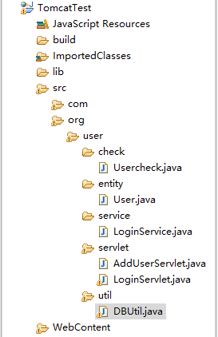
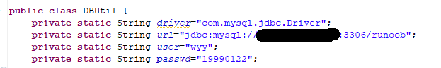

目录结构

各模块介绍
util
这部分只有一个文件 DBUtil.java ，负责连接数据库。在此基础上，登录和注册部分只需要通过调用该对象的getConnection()方法既可以建立连接。如下：
Connection conn= DBUtil.getConnection();

注：将图中的IP地址、用户名、密码换成你自己的。
entity
这部分只有一个文件，定义了一个用户类user，共3个属性（用户名，ID号，密码），以及他们各自的set、get方法。
check
这部分只有一个文件 usercheck.java, 提供了用户查找和注册两个方法。
其中用户查找需要传递传递用户名参数，为string类型。该方法的返回值是一个user对象，需要在其他方法中在对该对象的密码进行核对。
注册这里，需要传入一个user对象。他会返回一个整型，告诉我们是否添加成功。
service
这部分只有一个文件 loginservice.java ，为loginservlet提供登录服务支持。该类只提供了checkuser一个方法，其需要提供用户名和密码两个参数，他会调用usercheck里面的用户查找方法，然后进行比对，返回一个Boolean值。
servlet
这部分有两个文件addUserservlet、 loginservlet。
loginservlet：获得客户端传来的用户名和密码，调用loginservice对象的checkuser方法核对，将核对结果返回
adduserservlet：获得客户端传来的用户名和密码，调用userchecker 的adduser方法，将结果返回。
webcontent
该目录下有两个登录和注册的测试页面（login.html 和 add.html）